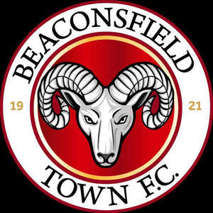

Trade Mark Journal No.2025/018 2 May 2025
UK00004189132 15 April 2025 (14,16,18,21,25,28,35,38,41,43)

- Class 14
- Decorative pins [jewellery]; Key charms [trinkets or fobs]; Keyrings.
- Class 16
- Tickets; Printed tickets; Entry tickets; Printed event admission tickets; Postcards; Stickers [stationery]; Gift bags; Decorations for pencils.
- Class 18
- Bags for sports clothing; Souvenir bags.
- Class 21
- Souvenir plates; Travel mugs; Statues, figurines, plaques and works of art, made of materials such as porcelain, terra-cotta or glass, included in the class; Thermal insulated bags for food or beverages; Beer mugs.
- Class 25
- Clothing; Jackets [clothing]; Gloves [clothing]; Gloves as clothing; Jerseys [clothing]; Rainproof clothing; Waterproof clothing; Jackets being sports clothing; Leisure clothing; Clothing for sports; Sports clothing; Athletic clothing; Weatherproof clothing; Water-resistant clothing; Men's clothing; Football jerseys; Football shirts; Football shoes; Football boots; Soccer shirts; Studs for football shoes; Replica football kits; Football boots (Studs for -); Studs for football boots; Sports jerseys; Soccer boots; Soccer shoes; Soccer bibs; Sports jerseys and breeches for sports; Sports shirts; Sports over uniforms; Sport shirts; Athletic uniforms; Sports caps; Sports socks.
- Class 28
- Football equipment; Football gloves; Indoor football tables; Football (Tables for indoor -); Tables for indoor football; Indoor football (Tables for -); Balls for playing sports; Footballs; Miniature replica football kits; Soccer ball goal nets; Balls for sports; Sports balls; Table football tables; Tables for table football.
- Class 35
- Digital advertising services; Digital marketing; Purchasing of goods and services for other businesses; Presentation of goods and services; Marketing the goods and services of others; Presentation of goods on communications media, for retail purposes; Advertising services relating to the sale of goods; Retail services relating to downloadable digital image files authenticated by non-fungible tokens [NFTs]; Retail services relating to sporting goods; Presentation of goods on communication media, for retail purposes; Communication media (Presentation of goods on -), for retail purposes; Retail purposes (Presentation of goods on communication media, for -); Rental of digital billboards; Business management of sporting clubs.
- Class 38
- Digital communications services; Digital communication services; Digital transmission services; Satellite broadcasting services relating to entertainment.
- Class 41
- Booking of seats for shows and sports events; Ticket procurement services for sporting events; Organisation of football competitions; Organisation of sports events in the field of football; Football academy services; Entertainment in the nature of football games; Organization of soccer games; Sports coaching; Coaching in the field of sports; Organising of football events; Football pools services; Soccer camps; Organization of soccer competitions; Sports refereeing; Training of sports players; Conducting of soccer games; Hosting of fantasy sports leagues; Arranging of soccer games; Sports officiating; Sports refereeing and officiating; Entertainment in the nature of soccer games; Soccer camp services; Soccer instruction; Sports club services; Services for the organisation of football events; Organisation of sports tournaments; Sports coaching services; Organization of sports competitions; Organising of sports competitions and sports events; Organising of sports events and of sports competitions; Organisation of sports competitions; Organising of sports and sports events; Tuition in sports; Sports tuition; Educational services; Educational and training services; Educational and teaching services; Education services; Educational services provided for children; Educational services in the nature of coaching; Educational services relating to sports; Sporting education services; Training and education services; Education and training services; Physical education services; Secondary school educational services; Sports education services; Educational and training services relating to sport; Educational services provided by academies; Educational and instruction services relating to sport; Teaching services; Provision of sporting club facilities; Club sporting facilities (Provision of -); Health and fitness club services; Entertainment services; Sports entertainment services; Hospitality services (entertainment); Corporate entertainment services; Live entertainment services; Popular entertainment services; Organisation of entertainment services; Club entertainment services; Club services [entertainment]; Children's entertainment services; Entertainment services provided for children; Provision of entertainment services for children; Entertainment services relating to esports; Live entertainment production services; Social club services for entertainment purposes; Entertainment services relating to sport; Entertainment, education and instruction services; Entertainment services relating to competitions; Ticket agency services [entertainment]; Entertainment ticket agency services; Entertainment services in the nature of competitions; Entertainment services in the nature of organizing social entertainment events; Ticket procurement services for entertainment events; Provision of entertainment services through the media of television; Entertainment; Leisure services; Rental services relating to equipment and facilities for education, entertainment, sports and culture; Gaming services; Entertainment services relating to sporting events; On-line ticket agency services for entertainment purposes; Entertainment services in the nature of sporting events; Sports information services.
- Class 43
- Bar and restaurant services; Restaurant and bar services; Beer bar services; Wine bar services; Snack bar services; Bar services; Coffee bar services; Restaurant services; Private members dining club services; Club services for the provision of food and drink; Providing food and drink in restaurants and bars; Private members drinking club services; Wine bars; Serving food and drink for guests in restaurants; Lounge services (Cocktail -); Restaurants; Bars; Providing restaurant services.
Beaconsfield Town Football Club Limited